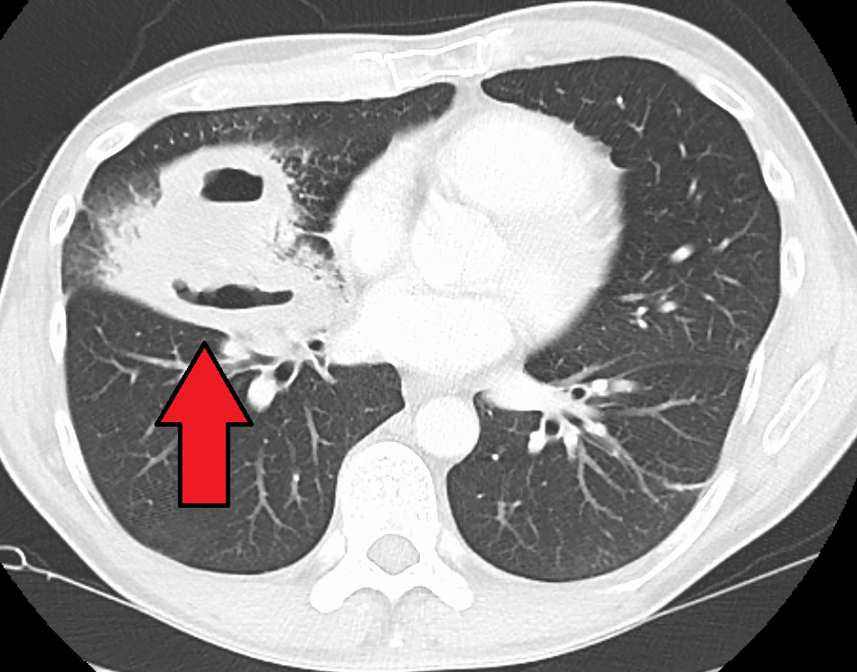

Абсцесс и гангрена лёгкого. Бронхоэктатическая болезнь
Инфекционные деструкции лёгких: абсцесс и гангрена
Под термином инфекционная деструкция лёгких понимают группу гнойно-некротических поражений паренхимы (абсцесс и гангрена). Абсцесс лёгкого представляет собой очаговый некроз лёгочной ткани с последующим гнойным расплавлением и образованием отграниченной полости. Гангрена лёгкого характеризуется массивным омертвением паренхимы без чётких анатомических границ и выраженной склонностью к гнилостному распаду.
Обтурация бронха слизью или аспиратом вызывает локальный ателектаз и гипоксию. В бескислородной среде бактериальные эндотоксины вместе с лизосомальными ферментами лейкоцитов индуцируют гибель альвеолярных клеток, запуская ферментативное расплавление. Первичные полости при аспирации возникают в II сегменте верхних долей и VI сегменте нижних долей. Вторичные метастатические очаги при сепсисе локализуются субплеврально и часто носят множественный характер.
Решающим фактором ограничения зоны некроза служит состояние микроциркуляторного русла. Тромбоз капилляров и ветвей лёгочной артерии прекращает перфузию, что исключает миграцию нейтрофилов, блокирует формирование защитного грануляционного вала и приводит к быстрому гнилостному распаду паренхимы.
| Морфологический признак | Абсцесс лёгкого | Гангрена лёгкого |
|---|---|---|
| Границы зоны поражения | Чёткие, очаг окружён пиогенной оболочкой и грануляциями | Размытые, демаркационный барьер полностью отсутствует |
| Объём вовлечённой ткани | Ограниченный (в пределах одного или двух сегментов) | Диффузный (доля, несколько долей или лёгкое целиком) |
| Состояние микроциркуляции | Локальный тромбоз в центре с перифокальной гиперемией | Тотальный прогрессирующий тромбоз лёгочных сосудов |
| Характер некротического детрита | Жидкий гнойный экссудат с мелкими тканевыми секвестрами | Ихорозный зловонный распад с крупными секвестрами ткани |
Гнойное расплавление стенки сосудов внутри полости способно повлечь массивное лёгочное кровотечение, требующее неотложного хирургического вмешательства.
Диагностический поиск при инфекционных деструкциях лёгких
Формирование гнойника характеризуется двухфазным течением. В первой фазе (до прорыва в бронхи) преобладают симптомы интоксикации: фебрильная лихорадка, озноб, боли в груди и сухой кашель. Вторая фаза (при дренировании через бронх) манифестирует внезапным отхождением обильной зловонной мокроты («полным ртом»), после чего температура снижается.

До опорожнения гнойника над зоной поражения определяются укорочение перкуторного звука и ослабление дыхания. После частичной эвакуации гноя и проникновения воздуха формируются физикальные симптомы полости: тимпанический перкуторный звук, амфорическое дыхание и влажные крупнопузырчатые хрипы.
До прорыва гнойника на рентгенограммах видна массивная негомогенная инфильтрация. После дренирования определяется округлое просветление с горизонтальной границей — симптом уровня жидкости. Компьютерная томография визуализирует мелкие очаги распада, свободно плавающие тканевые секвестры и точно разграничивает абсцесс с эмпиемой плевры. В анализе крови регистрируют высокий лейкоцитоз со сдвигом влево и увеличение СОЭ; развиваются гипопротеинемия и гипоальбуминемия, а в моче появляются белок и цилиндры.
Алгоритм поэтапной диагностики:
- Сбор анамнеза: установление сроков заболевания и факта одномоментного откашливания большого объема мокроты.
- Физикальное обследование: выявление признаков инфильтрации либо физикальных симптомов сформированной полости.
- Лабораторный скрининг: оценка выраженности системного воспаления по лейкоцитозу, сдвигу формулы, СОЭ и уровню белка плазмы.
- Лучевая верификация: выполнение полипозиционной рентгенографии и компьютерной томографии для оценки стенок полости, наличия секвестров и вовлечения плевры.
При рентгенографии в положении лёжа на спине симптом уровня жидкости не определяется, поэтому снимки всегда выполняют в вертикальном положении пациента или в латеропозиции.
Хирургическая тактика при острых абсцессах и гангрене лёгкого
В зоне некроза микроциркуляторное русло тромбировано, из-за чего системные антибиотики не создают бактерицидной концентрации в детрите. Включение метронидазола купирует прогрессирующее гнилостное расплавление паренхимы, воздействуя на неспорообразующие анаэробы, но медикаментозное лечение не освобождает организм от некротических масс.
Алгоритм лечения включает три шага: 1) при центральных абсцессах применяют санационную бронхоскопию и катетеризацию дренирующего бронха; 2) при субплевральной локализации и блокированном бронхе выполняют чрескожное пункционное микродренирование под УЗИ или КТ-контролем[Синдромология, с. 41]; 3) при безуспешности закрытого дренирования и распространении некроза пациента передают торакальным хирургам.
Распространенная гангрена легкого с сепсисом — прямое показание к резекции лёгкого (лобэктомии или пневмонэктомии). Предоперационная подготовка (2–4 часа) включает волемическое возмещение, детоксикацию и интубацию трахеи двухпросветной трубкой с раздельной вентиляцией. Это предотвращает затекание гнойного секрета в противоположное лёгкое и развитие асфиксии.
Прорыв гнойника в плевральную полость ведет к пиопневмотораксу, требующему дренирования плевры по Бюлау.[Кузин, с. 144] Экстренная торакотомия показана при профузном кровотечении или некупируемом бронхоплевральном свище с нарастающей эмфиземой средостения.
Метастатический абсцесс лёгкого развивается гематогенно из отдаленного очага (остеомиелит, септический тромбофлебит). Очаги обычно множественные и двусторонние, поэтому резекция паренхимы не показана, а терапия сводится к санации первичного источника, таргетным антибиотикам и пункционной аспирации отдельных напряженных полостей.
Бронхоэктатическая болезнь: определение, этиология и формы
В основе патологии лежит необратимая деструкция мышечного и эластического слоёв стенки воздухоносных путей с замещением их соединительной тканью, что формирует бронхоэктатическую болезнь.
Врождённые бронхоэктазы обусловлены пороками эмбрионального развития (кистозная гипоплазия, врождённое «сотовое лёгкое») или входят в состав наследственных патологий, таких как синдром Картагенера (сочетание бронхоэктазов с хроническим пансинуситом и полным обратным расположением внутренних органов — situs viscerum inversus — из-за цилиарной дискинезии).[Кузин, с. 151]
Приобретённые бронхоэктазы формируются под воздействием обструктивных и воспалительных факторов: нарушения проходимости (инородные тела, опухоли, сдавление лимфоузлами) с присоединением вторичной инфекции (после коклюша, кори, пневмонии) или при врождённом дефиците альфа-1-антитрипсина (разрушение эластических волокон нейтрофильной эластазой).
Цилиндрические бронхоэктазы представляют собой равномерное трубчатое увеличение диаметра бронха без сужения к периферии. На первой стадии процесса изменения ограничиваются расширением мелких бронхов диаметром 0,5—1,5 см с умеренно утолщенными стенками.[Кузин, с. 152] Мешотчатые бронхоэктазы выглядят как локальные шаровидные или овальные слепые выпячивания с истончёнными стенками, лишенными хрящевого остова.
При ателектатической форме поражённый участок паренхимы спадается, уменьшается в объёме, имеет светло-розовую окраску и лишён отложений угольного пигмента из-за прекращения вентиляции альвеол[Кузин, с. 151], а бронхи образуют плотный пучок. При отсутствии ателектаза расширенные бронхи сохраняют нормальное топографическое положение.[Кузин, с. 153]
Патогенез и стадии морфогенеза бронхоэктазов
Пусковым механизмом служит застой секрета вследствие нарушения мукоцилиарного клиренса. Скопление слизи вызывает обтурацию бронха, а колебания давления при кашле приводят к ретенционному расширению просвета.
На первой стадии морфогенеза происходят изолированное расширение мелких бронхов диаметром 0,5—1,5 см и скопление неинфицированной слизи при полной сохранности слизистой оболочки, мышечных пучков и хрящевого каркаса.[Кузин, с. 152]
На второй стадии присоединение инфекции приводит к развитию гнойного эндобронхита и перибронхиального воспаления с проникновением лейкоцитарного инфильтрата в мышечный слой и прилежащие альвеолы.
На третьей стадии гнойное расплавление разрушает мышечные волокна, эластическую строму и хрящевые пластинки, а эпителий замещается грануляционной и затем рубцовой тканью (циркулярный склероз стенки и диффузный перибронхиальный пневмосклероз). Главный морфологический критерий перехода в третью стадию — полная гибель мышечно-эластических элементов и хрящевых пластинок стенки бронха с развитием грубого склероза.
Клиническая картина и лабораторные маркеры бронхоэктатической болезни
Ведущим симптомом бронхоэктатической болезни служит постоянный продуктивный кашель. Из-за разрушения реснитчатого эпителия и утраты мукоцилиарного клиренса гнойный секрет во время сна пассивно скапливается в полостях, а утром при пробуждении отходит залпом («полным ртом»). Суточный объём мокроты достигает 100–500 мл. При отстаивании она разделяется на три слоя: верхний (пенистый — слизь и воздух), средний (водянистый — серозная жидкость и слюна) и нижний (гной, тканевый детрит, пробки Дитриха).
Длительное воспаление и гипоксия вызывают колбовидное утолщение фаланг («барабанные палочки») и деформацию ногтей («часовые стёкла») из-за гипертрофии подногтевого ложа.[Кузин, с. 152] При стимуляции субпериостального неоангиогенеза вазоактивными факторами развивается синдром Пьера Мари — Бамбергера (системная гипертрофическая остеоартропатия), сочетающий утолщение фаланг, периостоз длинных трубчатых костей и боли в конечностях.
| Лабораторный маркер | Фаза ремиссии | Фаза обострения |
|---|---|---|
| Лейкоциты периферической крови | В пределах нормы | Выраженный лейкоцитоз с нейтрофильным сдвигом влево |
| Скорость оседания эритроцитов (СОЭ) | Нормальная или умеренно повышена | Значительное повышение (до 40–60 мм/ч) |
| Белковые фракции сыворотки | Без грубых отклонений | Гипоальбуминемия, гипер-α2- и γ-глобулинемия |
| Общий анализ мочи | Без патологических изменений | Протеинурия, микрогематурия, цилиндрурия |
При обострении инфекции нарастают нейтрофильный лейкоцитоз со сдвигом влево, токсическая зернистость нейтрофилов, СОЭ и гипоальбуминемия. Протеинурия и цилиндрурия свидетельствуют о поражении почечного фильтра, а многолетняя антигенная стимуляция приводит к отложению амилоида в клубочках, стойкой массивной протеинурии и почечной недостаточности.
Инструментальная и дифференциальная диагностика нагноений лёгких
На обзорной рентгенограмме при некрозе и дренировании очага формируется кольцевидная тень с горизонтальным уровнем жидкости. Эта картина характерна для банального абсцесса, распада карциномы или кавернозного туберкулёза, где универсальный механизм деструкции обусловлен оттоком некротических масс через бронх.

Компьютерная томография выступает золотым стандартом, позволяя на ранних стадиях выявлять расширения мелких бронхов диаметром 0,5—1,5 см. Бронхография выявляет сближение ветвей при ателектазе или симптом ампутации бронха при опухолевой/рубцовой обтурации. Перед диагностическими вмешательствами проводят постуральный дренаж по 10 мин дважды в день.[Синдромология, с. 41]
Центральная карцинома вызывает гиповентиляцию, ателектаз и параканкрозный абсцесс; раковая каверна отличается бугристым внутренним контуром и эксцентрическим распадом. Туберкулезные каверны чаще локализуются в I, II и VI сегментах, имеют фиброзную капсулу, дорожку к корню и очаги отсева.
| Заболевание | Типичная локализация | Характеристика стенки и контуров | Состояние окружающих бронхов и ткани |
|---|---|---|---|
| Острый абсцесс легкого | S2, S6, S10 (зависимые сегменты) | Тонкая или умеренно утолщенная стенка, ровный внутренний контур, уровень жидкости | Перифокальная инфильтрация, дренирующий бронх проходим |
| Бронхоэктатическая болезнь | Базальные сегменты нижних долей, средняя доля | Множественные цилиндрические или мешотчатые полости диаметром 0,5—1,5 см | Сближение ветвей при ателектазе, четкообразные утолщения стенок бронхов |
| Центральный рак легкого | Прикорневая зона любой локализации | Массивная бугристая стенка, эксцентрическая полость распада, неровный внутренний рельеф | Симптом ампутации бронха, сегментарный или долевой ателектаз |
| Фиброзно-кавернозный туберкулез | Верхние доли (S1, S2), верхушки нижних долей (S6) | Плотная фиброзная стенка, четкие наружные и внутренние границы | Очаги отсева в обоих легких, тяжистая дорожка дренирующего бронха к корню |
Таким образом, при дифференциальной диагностике ателектаза решающим рентгенологическим признаком опухолевой окклюзии воздухоносного пути выступает симптом ампутации бронха.
Осложнения бронхоэктатической болезни
Профузное легочное кровотечение практически всегда исходит из аррозированных гипертрофированных бронхиальных артерий под высоким системным давлением.
Распространение инфекционного процесса идет по трем путям:
1. Контактный: разрушение стенки бронха, образование перибронхиального воспалительного вала с последующим формированием вторичных абсцессов или гангрены легкого.
2. Плевральный: прорыв субплевральных полостей вызывает спонтанный пневмоторакс, плеврит или эмпиему плевры.
3. Сосудистый (гематогенный): инфицированные тромбы из легочных вен попадают в большой круг кровообращения и ЦНС, вызывая метастатические абсцессы головного мозга и менингит.
Пневмофиброз, эмфизема, редукция капилляров и вазоконстрикция приводят к легочной гипертензии. В ответ на это развивается хроническое лёгочное сердце — гипертрофия и дилатация правого желудочка. Срыв его компенсации вызывает лёгочно-сердечную недостаточность — состояние, при котором артериальная гипоксемия сочетается с неспособностью правых отделов сердца перекачивать кровь, проявляющееся одышкой, цианозом, гепатомегалией и периферическими отеками.
Консервативная терапия и хирургическое лечение бронхоэктазов
Терапия всегда сочетает антибиотики широкого спектра действия, муколитики и ингаляции для разжижения мокроты. Ведущую роль играет постуральный дренаж (с опущенным головным концом), облегчающий стекание гноя к карине трахеи. При лечении бронхоэктазов его лучше проводить дважды в день в течение 10 мин.[Синдромология, с. 41]
Неэффективность медикаментозной терапии является прямым показанием к операции. Решение принимается в три этапа:
- Оценка консервативного этапа: констатация неэффективности антибактериальной терапии и дренажа.
- Оценка локализации процесса: верификация зоны поражения по КТ (хирургическое лечение возможно только при локализованных формах).
- Оценка функционального резерва: исследование показателей внешнего дыхания.
При локализованных односторонних формах выполняют сегментэктомию, моно- или билобэктомию. Диффузное двустороннее поражение бронхиального дерева служит абсолютным противопоказанием к резекции.
Хронические нагноительные заболевания лёгких и исходы деструкций
Хронические нагноительные заболевания лёгких объединяют нозологии с длительным рецидивирующим бактериальным воспалением, формированием полостей распада, фиброза и бронхоэктазий.
| Группа патологии | Нозологические формы | Ведущий патогенетический фактор |
|---|---|---|
| Паренхиматозные процессы | Хронический абсцесс лёгкого, деструкции с бронхоэктазами | Формирование ригидной пиогенной капсулы и склероз дренирующих бронхов |
| Эндобронхиальные процессы | Абсцедирующий бронхит | Хроническая обструкция, гиперкриния слизистой и микроабсцедирование стенок |
| Плевральные осложнения | Хроническая эмпиема плевры (с бронхоплевральным свищом или без него) | Ригидный фиброторакс, препятствующий расправлению легочной ткани |
| Постоперационные состояния | Патология оперированного и резецированного лёгкого | Деформация культи бронха, прогрессирование процесса в оставшихся сегментах |
Хронический абсцесс лёгкого сохраняется свыше двух месяцев. В его стенке образуется грубая пиогенная капсула, блокирующая спадение полости. При прогрессировании процесс может переходить в абсцедирующий бронхит, хроническую эмпиему плевры или патологию оперированного лёгкого (свищи культи бронха, остаточные полости). Диспансерное наблюдение включает контроль функции дыхания, санационную бронхоскопию и ЛФК.
Какое морфологическое изменение стенки полости необратимо нарушает ее способность к спадению при переходе абсцесса в хроническую форму?
Источники
- Госпитальная хирургия. Синдромология. Миланов 2013
- Хирургические болезни. Кузин